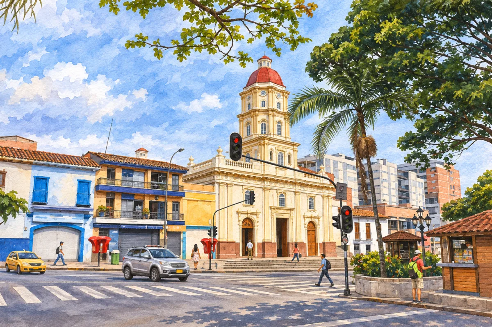

Propuesta pendiente de aprobación; no se ha sustituido la portada de dev1. El parque sí tiene un quiosco, pero la forma y ubicación de las estructuras de la portada anterior no están confirmadas.


Fuente sobre el quiosco municipal: Puebliando por Antioquia.